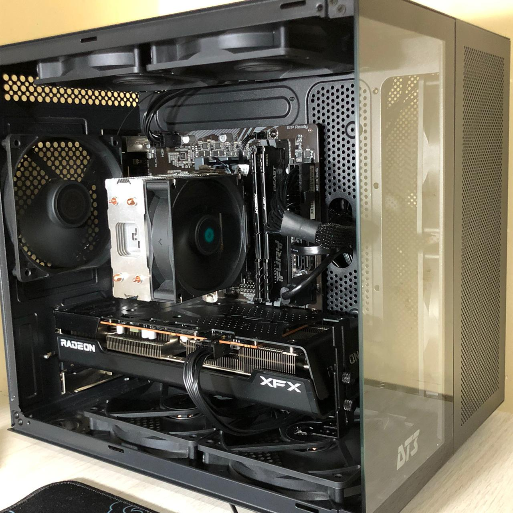
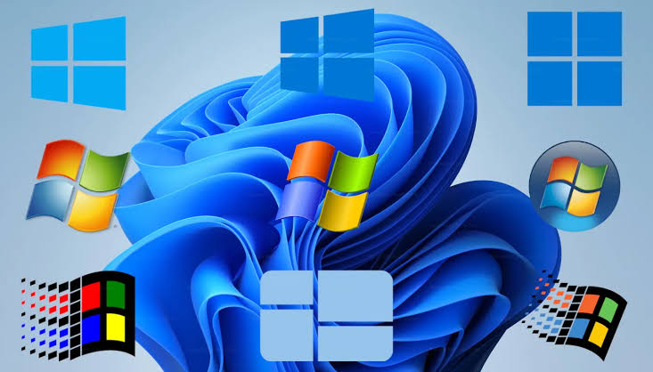
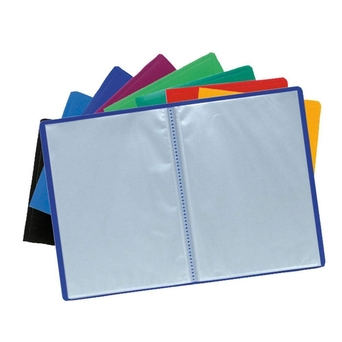

Quem eu sou
Sou Técnico de Suporte Informático. Possuo experiência em atendimento ao público, e suporte técnico. Procuro oferecer soluções eficientes, rápidas e de qualidade, sou formado pelo IMPG de Gorongosa.
Clique numa competência para ver mais informações.
Manutenção
Reparação e manutenção de computadores.
Redes
Configuração de redes locais.
Windows
Instalação e configuração.
Microsoft Office
Word, Excel e PowerPoint.
Clique numa experiência para ver mais informações.
Pietros Serviços
2020
Solution Center
2017
Movitel
2014
Clique num projecto para ver mais informações.

Manutenção de Computadores
Formatação, limpeza e otimização de computadores.

Instalação de Sistemas Operativos
Windows 7, 8, 8.1, 10, 11, Linux, Ubuntu e programas essenciais.
Redes
Configuração de redes e impressoras.

Criação de Canal no YouTube
Organização e partilha de tutoriais e conteúdos de informática.

Criação de Portefólio Digital
Apresentação de competências, projectos e contactos numa página web.
Entra em contacto comigo através dos meus canais: